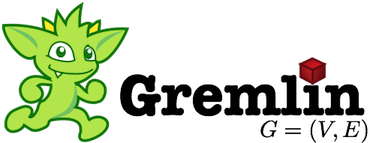

Gremlin is a graph traversal language. The documentation herein will provide all the information necessary to understand how to use Gremlin for graph query, analysis, and manipulation. Gremlin works over those graph databases/frameworks that implement the Blueprints property graph data model. Gremlin is a style of graph traversal that can be used in various JVM languages. This distribution of Gremlin provides support for Java and Groovy. Except where otherwise stated, the documentation herein is respective of the Groovy implementation (minor syntactic tweaks are required to map the ideas over to other JVM implementations).
Please join the Gremlin users group at http://groups.google.com/group/gremlin-users for all TinkerPop related discussions. 1
// calculate basic collaborative filtering for vertex 1
m = [:]
g.v(1).out('likes').in('likes').out('likes').groupCount(m)
m.sort{-it.value}
// calculate the primary eigenvector (eigenvector centrality) of a graph
m = [:]; c = 0;
g.V.as('x').out.groupCount(m).loop('x'){c++ < 1000}
m.sort{-it.value}- GremlinDocs (easy reference manual)
- SQL2Gremlin (easy reference manual)
- The Benefits of Gremlin
- Basic Concepts
- Getting Started
- Learning Dependencies
- Defining a Property Graph
- Basic Graph Traversals
- Gremlin API
- Gremlin Steps (cheat sheet)
- GremlinPipeline JavaDoc (definitive)
- Gremlin Methods (cheat sheet)
- Gremlin Steps (cheat sheet)
- Intermediate Concepts
- Graph Framework Connectors
- Using JUNG
- SPARQL vs. Gremlin
- LinkedData Sail (Traversing the Web of Data)
- JVM Language Implementations (cheat sheet)
- Gremlin Java
- Gremlin Groovy
- Gremlin Scala (third-party)
- Gremlin Clojure (third-party)
- Gremlin Clojure (Ogre) (third-party)
- Gremlin JavaScript (third-party)
- Gremlin JRuby (Pacer) (third-party)
- Conclusion
The Graph Traversal Programming Pattern (Presentation of Basic Graph Traversal Concepts)
On the Nature of Pipes (Understand the Gremlin Engine)
Gremlin Tutorial 1 (Screencast of Gremlin 0.7)
Gremlin Tutorial 2 (Presentation of Gremlin 1.1)
<!-- * can be java, groovy, or test -->
<dependency>
<groupId>com.tinkerpop.gremlin</groupId>
<artifactId>gremlin-*</artifactId>
<version>2.4.0</version>
</dependency>Non-Maven users can get the raw release jars from Apache’s Central Repository. Snapshots can be obtained from Sonatype (see Maven Repositories for more information).
1 Gremlin documentation is up to date with the current Gremlin codebase, not with the latest Gremlin release.
Gremlin JavaDoc: 2.4.0 -2.3.0 – 2.2.0 – 2.1.0 – 2.0.0
Gremlin WikiDoc: 2.4.0 – 2.3.0 – 2.2.0 – 2.1.0 – 2.0.0